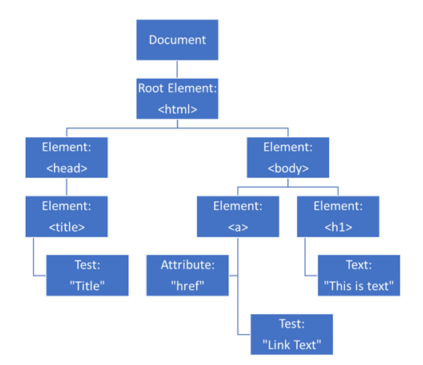
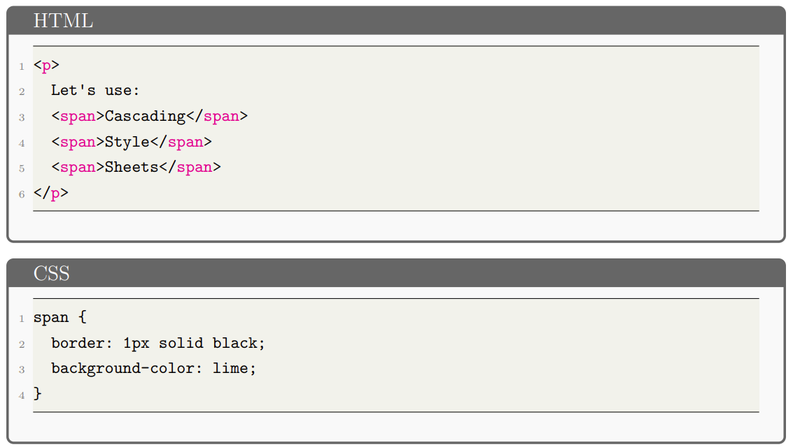
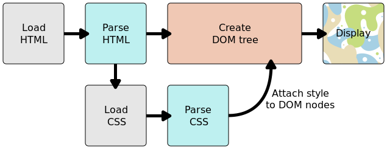

Nguyên tắc hoạt động cơ bản của CSS
Giới thiệu về DOM
- Khái niệm: DOM (Document Object Model) là cấu trúc cây đại diện cho tài
liệu HTML hoặc XML. Mỗi phần tử và thuộc tính trở thành các nút trong cây này.

- Tầm quan trọng: DOM đóng vai trò quan trọng trong việc thiết kế, gỡ lỗi,
và duy trì CSS. Đây là nơi CSS kết hợp với nội dung trang web để điều chỉnh hiển thị.
- Áp dụng CSS qua DOM: Khi trình duyệt phân tích cú pháp HTML và CSS, nó
tạo ra DOM, sau đó áp dụng các quy tắc CSS tương ứng cho các phần tử, ví dụ với thẻ
<span>.

Nguyên tắc hoạt động của CSS
- Bước 1: Tải tài liệu HTML: Trình duyệt tải tài liệu HTML từ máy chủ.
- Bước 2: Chuyển đổi HTML thành DOM: Tạo DOM từ tài liệu HTML để đại diện
cho cấu trúc trang web trong bộ nhớ.
- Bước 3: Tìm nạp tài nguyên liên kết: Trình duyệt tìm nạp các tài nguyên
liên kết như hình ảnh, video, và tệp CSS.
- Bước 4: Phân tích cú pháp CSS: Phân tích tệp CSS để xác định các quy tắc
sẽ áp dụng cho các phần tử DOM.
- Bước 5: Tạo cây kết xuất (Render Tree): Kết hợp DOM và các quy tắc CSS để
tạo ra cây kết xuất mô tả cấu trúc trang web.
- Bước 6: Hiển thị trên màn hình: Trình duyệt vẽ trang web dựa trên cây kết
xuất và hiển thị trên màn hình.

Trình duyệt xử lý CSS không hiểu như nào?
- Tính tương thích: không phải tất cả trình duyệt đều triển khai các tính
năng CSS mới cùng một lúc.
- Phản ứng của trình duyệt: nếu không hiểu khai báo, trình duyệt bỏ qua
phần đó và tiếp tục.
- Giải pháp: tạo các kiểu dự phòng đảm bảo nội dung vẫn hiển thị hợp lý.
- Lợi ích: hành vi này cho phép sử dụng CSS mới như một cải tiến mà không lo xảy ra lỗi khi trình duyệt
không hỗ trợ.
↑